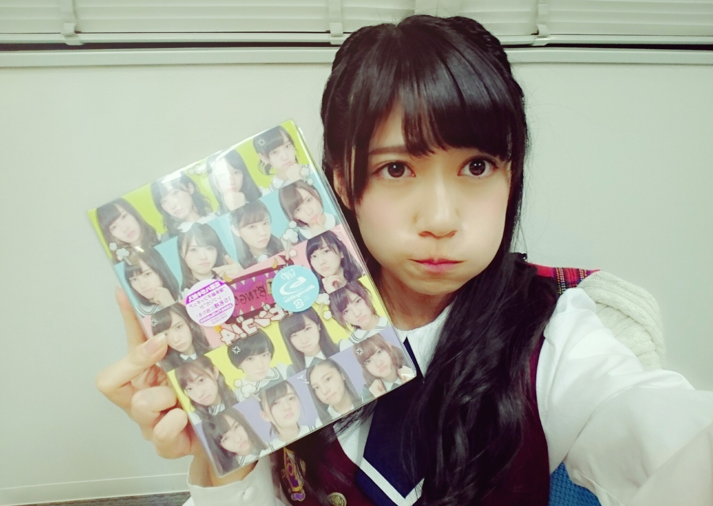
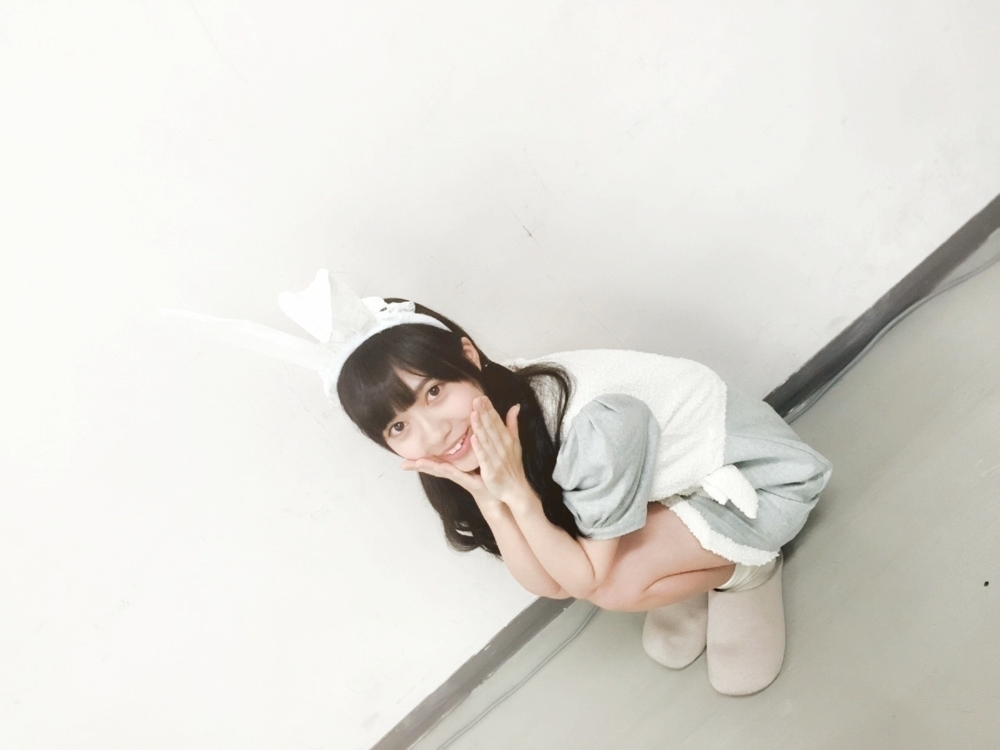
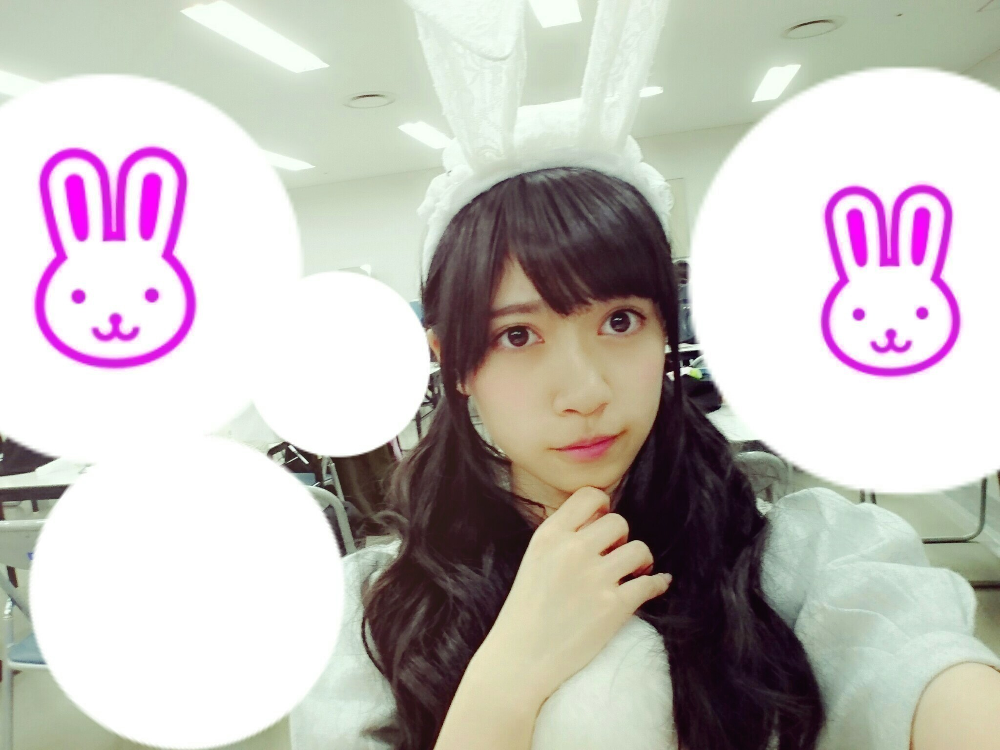
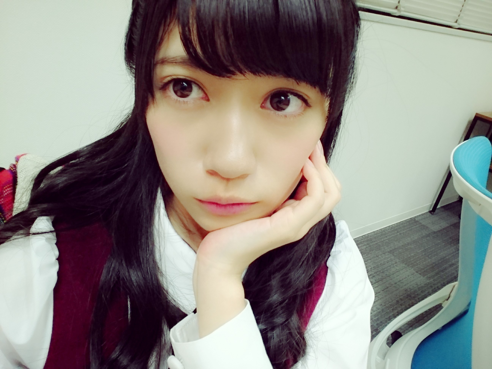
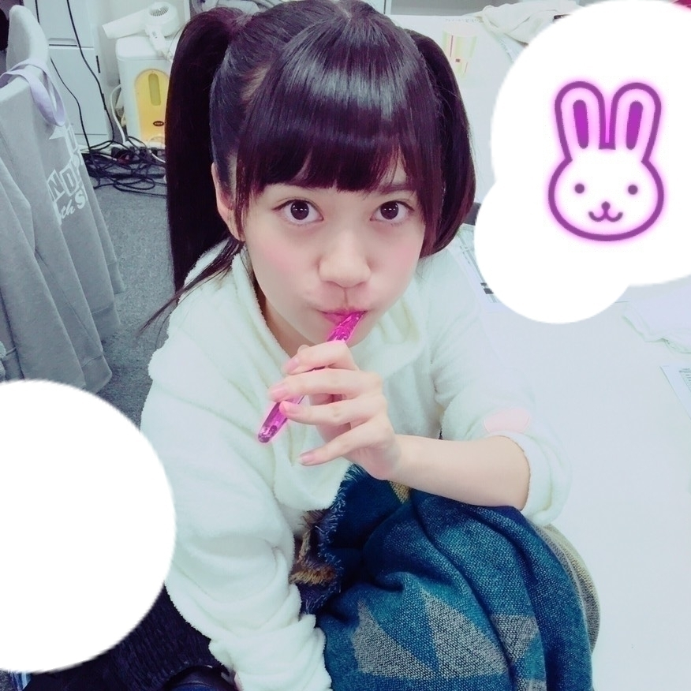
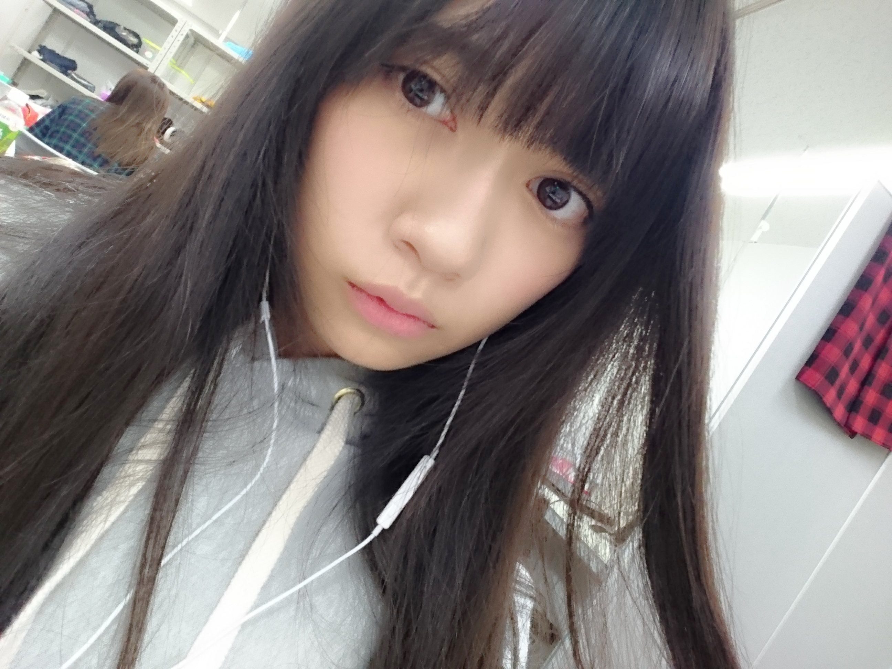

2015/1020Tueグレー★
乃木坂46が2015年12月にMUSIC VIDEO集をリリースする予定となっております。
そこで、これまでMUSIC VIDEOが制作されていない楽曲の中から、皆様のリクエストが上位となった曲のMUSIC VIDEOを新たに制作し、12月に発売されるMUSIC VIDEO集に収録いたします。
以下のページの応募フォームから、あなたがMUSIC VIDEOを観てみたい作品をお選び頂きご応募ください！
応募期間は2015年10月14日～10月20日23:59となります。
「ボーダー」が
当時
研究生唯一の参加楽曲
どうなるのかわかりませんが
かけてみませんか？
参加メンバー
純奈
琴子
絢音
蘭世
怜奈
みり愛
迷ってる方居たら
図々しいかも知れませんが
ボーダーに1票、、、:-(
宜しくお願いいたします
残り数時間
おはようございます
こんにちは
こんばんは:-)
寺田蘭世です
宜しくお願いいたします！

この写真のプンプン顔
皆可愛くて:-D
握手会○
幕張メッセにて
3部4部5部ありがとうございました
ちなみに4部は追加でしたが
たくさんの方に来て頂きました
はじめましての方が多くて
まだまだ出会った事ない方が沢山いる
もっと頑張ろって
いつも思えます
ありがとうございました♬
ハロウィンが近いという事で色んなメンバーが
仮装してましたが
テラダも仮装しました
今年はうさぎさんです
去年のハロウィン覚えてる方いますかね？
母親手作りの
「エリザベート、トート」のコスプレ
それをいいって
言ってくれた方もいましたがイマイチなリアクション
初対面でこれですか、、、
っと言うリアクションの方が圧倒的に多く
テラダ少ししょんぼり
ごめんなさい
でも、良き思い出だし
テラダトートを生でみれた方はレアだったのですよ！

なのでベタですが
今年はうさぎさん
全身写真はじゅんなたんが
撮ってくれました！

どうですか？
うさぎさんやで
握手会自体は凄く
楽しかったです:-)
アンダーライブの事だったりやっぱり落選して
みにいけないってお話が多かった印象です
大変申し訳無いのですが
嬉しい悲鳴です
ぜひ、武道館お越し下さい
きっと今までの経験をフルパワー使ったLIVEに
なると思います！
乃木のの
北野氏、堀さんとのラジオ
北野さんのＭＣもとても可愛らしくて心地よかったです
また乃木ののに登場したいです:-)
らじらー
「サンクエトワール」
大人への近道いかがでしたか
らじらーさんもまた出たいよ！
そして、乃木中にて
「嫉妬の権利」
乃木中でダンス収録って
初めてですよね！
乃木どこ時代に研究生で
数回歌収録出た事あるんですがやっぱり歌収録楽しいです:-)
乃木坂Showではフルverも
放送されるので宜しくお願いいたします♬
嫉妬の権利ダンスとか
いかがでしたか
良かったら感想待ってます

雑誌お知らせ10月○
10 /2グラビアザテレビジョン
10/6GiRLPOP 2015 AUTUMN
10/ 9 UTB＋
10/15EX大衆
10/ 15MdN EXTRA Vol.3 乃木坂46 映像の世界
10/ 20ミラクルジャンプ
10/ 31BUBKA
有りがたき幸せ:-)
発売のミラクルジャンプさんでは
サンクエトワールのメンバーで表紙やらせて頂きました♬
撮影も凄く楽しかったです
中元さんが撮ってくださったのです:-)

アンダーライブについては
また千秋楽を迎えられたら
書きます
来てくれる方はお楽しみに
そして、全力で楽しんでください♬

アンダーライブ楽屋にて
準備中に撮った写真:-)
2015/10/20 14:12


コメント(1021)
あつき
世界中へピース！！！
ボーダーに入れました！
とまらんぜぜぜ（≧∇≦）
アンダーライブ頑張ってね！
蘭世おつかれさま(」・ω・)」うりゃ！(／・ω・)／おい！
残りのアンダーライブもファイト！応援してる！！！
ボーダーがミュージックビデオになったら嬉しいね
もーすぐ握手会だね！！！！
最近モバメに写真が....
嫉妬の権利の蘭世まじすごい良い！！！！
ライブも楽しみだわさ！！！！
蘭世の頑張り知ってます！！！！
蘭世のいない乃木坂は乃木坂じゃないよ！！
蘭世がいっちばん好き！！！！！！
つい最近、完全にファンになりました(￣▽￣)
よろしく^_^
ボーダーに清き一票を投じるねp(^_^)q
大人への近道と嫉妬の権利、めっちゃ好きすぎて発売日が楽しみすぎる（≧∇≦）
これからしっかり応援していくからね^o^
じゃ*･゜ﾟ･*:.｡..｡.:*･'(*ﾟ▽ﾟ*)'･*:.｡. .｡.:*･゜ﾟ･*
ひめたんと未央奈をきいと蘭世と後ろが支えてて完璧だった！
売り切れの店が多くてサンクエトワール人気かな？
11月3日の握手いくねっ！
名札作成中！
覚えてもらえるようにたくさんいくよ！
握手会お疲れ様！
受験終わったら行くね♪(´ε｀ )
|陰|ω-)q陰から応援してるゼ
MVの投票はもちろん「ボーダー」にしましたよー。
研究生唯一の曲だし、僕がこの曲が大好きなので選びました。
結果はどうなるかわからないですが、選ばれたらきっと素晴らしいMVになると思います！
結果が待ち遠しい( ?-? )
握手会のコスプレかわいいですね(^^)
蘭世にぴったりですごくお似合いです(^O^)
蘭世がでてるやつ、サンエトででてるやつは隈なくチェックしてます！
ミラクルジャンプも読みますよ(´｡･v･｡｀)
アンダーライブがまた始まりますが、頑張ってくださいね！
では！
あのサンタコスしてた眼鏡ですm(_ _)m
はじめましてなのにうるさくしてごめんね(・・；)
俺もともと能條推しだけどアンダラでは結構蘭ちゃんにも目いったなあ…
また握手行くと思うからそのときはよろしくお願いしますm(_ _)m
嫉妬の権利、乃木中でみたよ！！！
もうめっちゃよかった！何回みても可愛すぎて、、、、
うさぎさん見たかった〜:;(∩´﹏`∩);:
アンダラもサンエトも全部頑張ってね。
考えるよ。
僕が面白くなったらまた個握とりますね。
全握は行くのでよろしくお願いしますm(._.)m
蘭世！遠征してアンダラみて握手会、最高に楽しかった！
アンダラは箱狭くて曲も好きなのが多くて今までで一番のライブだった！
蘭世もすごく輝いてたよ！
握手会、蘭世顔小さくてかわいくて話も頭良い感じでほんと応援したくなった(^-^)
未央奈生誕Tに蘭世缶バッチつけていって戸惑わせてごめんね笑
胸つつかれたときは正直心臓飛び出そうになったｗｗ
武道館も見に行きます！握手会は次京都なのが関西勢の辛いところ...。
これからも応援するね
蘭世大好き！
ではまたね！
アンダーライブ、お立ち台に蘭世さんがいらっしゃって、あまりの顔の小ささにびっくりしてしまいすいませんでした。
後ろで踊っていても目を引けるパフォーマンス、素敵でしたし、間近で楽しそうに歌っている蘭世さんは輝いていました。
武道館にも参加しますので、サンクエトワールやフロントとしての活躍、楽しみにしています。
ボーダーに投票したよ♡
ボーダーのMV見たいなぁ
あとね！アンダーライブ25日の昼公演当たったから見に行くね！
少し遠めだけどアイアシアターは客席と近いから嬉しいなぁ♡
ハーフツインする予定だから探してみてね！
うちわはらんぜじゃないけどらんぜのことも大好きだから
らんぜの勢いとまらんぜー！
昨日の乃木中の嫉妬の権利みて
蘭世のかっこよく輝いてる姿見て
泣きそうになったよ(´;ω;)
ほんと大好きだよ！！
あともう少しで
会える♡
早く11月3日にならないかなあ
くるちゅん。
ボーダーいれたよー！
握手会いきたかったぁ！
本日アンダラが急遽行けることになったのです(-^艸^-)
今日も宮城のliveTシャツを着ていくので是非探してください⍤⃝
握手会最高でした(*˘︶˘*).｡.:*♡
また行きます！
蘭世たちの努力が報われて欲しい。という願い込めて、少しでも力になりたいと思いまして。
アンダーライブ4th激戦過ぎて行けません。
行けるファンに嫉妬の権利です！
じょしらくや犬天など、いろんなメンバーが大活躍したAiiAシアターで、今度は蘭世たちが大活躍して、その1ページに刻めるように頑張りましょう。
武道館のアンダーライブには当選して、偶然その当選の瞬間、武道館の中にいたので、武道館のアンダーライブが成功するようにお願いしました！
体調に気を付けて、マシュマロ食べて力つけてください！！
日曜日は握手会、乃木のの、乃木中と蘭世さん満喫の一日で大満足でした。
UTB+やらミラクルジャンプやら雑誌も追いかけるの大変なくらい活躍が止まらんぜで嬉しい限りです。
アンダラ後半戦？今日からreスタート、思う存分暴れてください！何とか1公演分だけチケットとれたのでサイリウムとタオルブルンブルン振り回して、きいちゃんに脇目を振らずに応援スッから見つけてください(笑)
怪我の無いように、メンバー皆で完走出来るように応援してます。
幕張は行けなくてごめんね…
蘭世本当に人気出てきて握手券も取りづらくなってきた(；´Д`A
13thは仕事が忙しくて会いに行けないんだけどブログコメはするので忘れないでね(இɷஇ )
アンダラもチケットまるで当たらず見に行かないのが悔やまれるけど頑張ってね٩(ˊᗜˋ*)و
またしゅんぞーと連番しに行きます(๑•̀ㅂ•́)و ｸﾞｯ!
ボーダー投票したよ。
MVになるといいね。
雑誌たくさん載ってるね。
全部買ってるよ。
でも忙しくて見れてない。
ラジオも録音はしてる。
してるけど。。。
あ〜、乃木ビンゴのBD買わないといけない。
教えてくれてありがとう。
アンダーライブも残り半分だっけ？
怪我に気をつけて頑張ってね。
では〜〜
お母さんの作ったっていう衣装気になる...笑
うさぎさんはめっちゃ可愛い！！
アンダラ行きたいけど、俺に行ける日は来るのか...
チケット送ってくれーい( ´ ▽ ` )笑
蘭世握手会ありがとう！
蘭世にまいまいとかずみん推しバレちゃったね( .. )
お許しくれてありがとう！
会う度に蘭世が可愛くなっていく…
握手会が毎回楽しみ。。。
次の握手会もよろしくね〜！
アンダラ22日見に行くね！！
蘭世しか見ません。
一生懸命な姿、目に焼き付けるね(*´罒`*)
ではプーさん帽子のプー太郎でした(￣^￣)ゞ
おはこんにちばんはヽ(｡･ω･｡)ﾉ
乃木中見たよ！「嫉妬の権利」パフォーマンスすごいよかった！かっこいい！それの余韻で月曜日学校の授業内容ほとんど覚えてない笑 だいたいの授業は自習だったけど笑 乃木坂46showでのフルのパフォーマンスが楽しみ！！歌詞もメロディーもダンスも全部いいし、何より踊ってるメンバーみんながダンスも表情も最高で！！イントロのピアノでもうテンション最高潮でした！笑
「大人への近道」も聴いたよ！この楽曲のメロディーも歌詞も好き！サンエトちゃんが最高すぎて困っちゃう笑 こっちのイントロも声あげるほど大好きです！乃木中のスタジオライブ楽しみにしてます！
「嫉妬の権利」も「大人への近道」もMVが楽しみ！どんな感じなんだろうな！もう待てない！
ではでは(｀･ω･´)ﾉ
握手会楽しかったなー、久々だったけど俺のこと覚えてくれててほんと嬉しかった！！結構真面目な話もできたし蘭世の思ってることもちゃんと聞けたしほんとに良かった！！次の個握だいぶ先になっちゃうけど覚えててなぁ
アンダラも最前だったからめっちゃレスくれてくそ楽しかった、あのTシャツ可愛かったでしょ？笑、武道館は期待しちゃってもいいよね？精一杯頑張ってください！！
またブログについては後でコメントするね！
だいちまる
MV見てみたい‼︎
こんにちは
こんばんは
日曜日の握手会はお疲れ様でした(^o^)/
4部と5部に行かせていただきました！
とても楽しい時間を過ごすことができたよー
幕張の握手会で約束したからって伝えたら、おお良い人って言ってくれてめっちゃ嬉しかった(*^o^*)
また握手しに行くので1ミリくらい覚えててくれたら嬉しいなm(._.)m
MVのやつはモチのロンでボーダーな投票したよ！！
蘭世がセンターって言うのもあるけど、曲もすごく好きです^ ^
選ばれるといいなーーー
23日のアンダーライブ、最前列で見させていただきます！！
下手の方で蘭世のタオル振ってるんで気づいてねー
蘭世最近
:-D←この顔文字ハマってる？
なかなか可愛い
蘭世はもっと可愛い
ってな感じで
これからも、蘭世の勢い止まらんぜぇーー
またコメントするね！
蘭世うさぎかわいい(^o^)
11月の個握行きます
初めてなんでよろしくお願いしまーす笑
…多分緊張して全く喋りませんけど
もぅすでにボーダーに１票入れてる♪
期待してるからね～ヽ(・∀・)ノ
5部に友達と3人で行かせてもらいました！
「あれ？なんか頭に生えてるよ…？」3連番、お疲れ様です笑
僕はトップバッターで「ティッシュで作った何かかと思った！」とか言っちゃったんですが、あれはネタなんです！ちゃんとうさみみってわかってます！ごめんなさい！
そしてそのあと、1人でメルキュールのことについて話させていただきました
最終的にはサンクエトワールに決まったけど、1票入れてくれて嬉しかったです！
このことを直接言えてよかったなぁ…
また友達とお邪魔させて頂くかも知れませんが、そのときはよろしくお願いします！
あるるです！
ボーダーに1票入れたかったけど
爆睡してしまって(>_<)
握手会のうさぎさん
可愛いね！
自分はまだまだ握手会まで
時間あるから寂しい(T-T)
コメントする